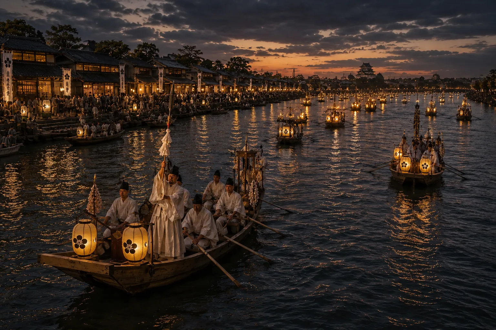
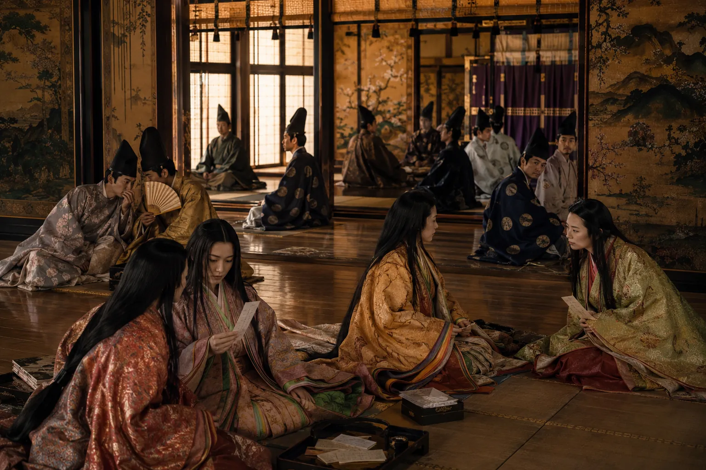
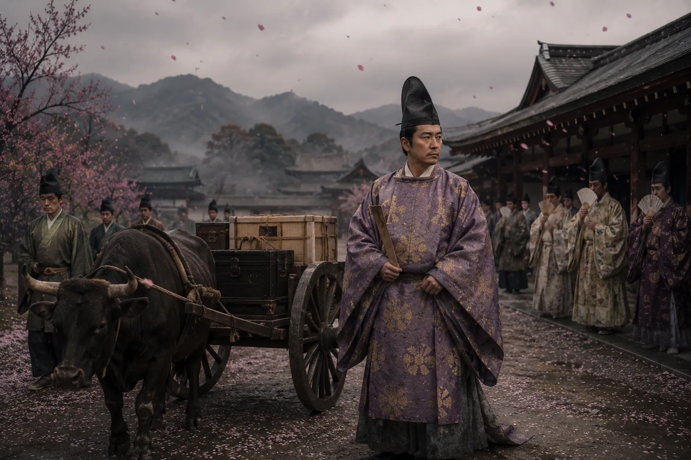
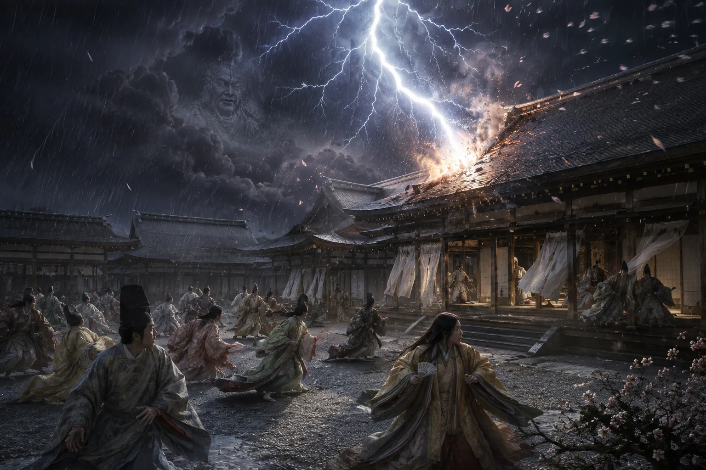
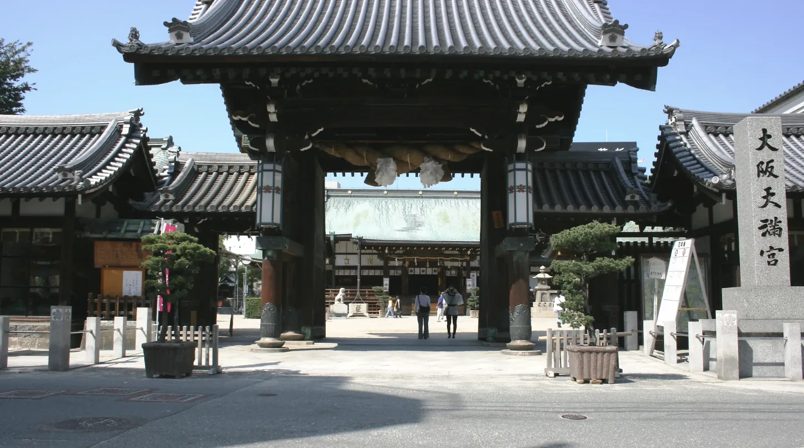
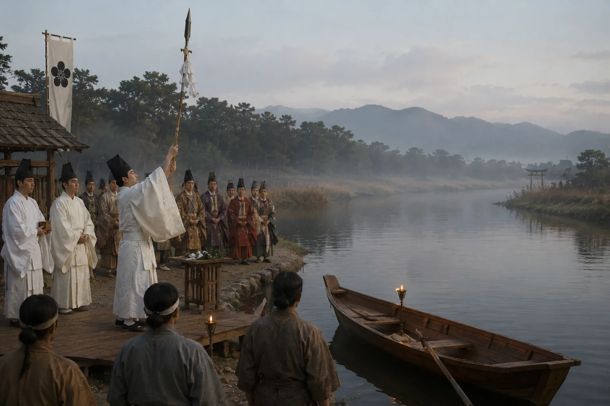
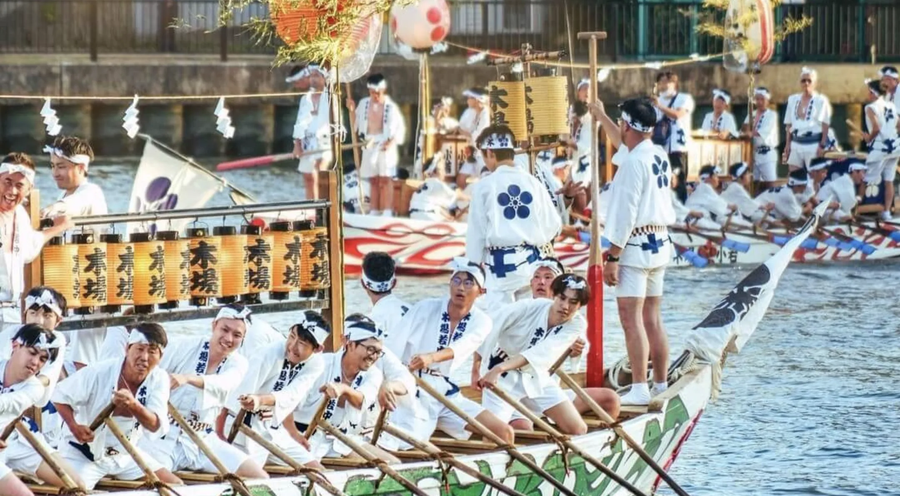

道真は幼い頃から漢文学や詩、儒学に並外れた才能を見せました。影響力を家柄だけに頼る多くの貴族と違って、彼の評価は学問と実力の上に築かれました。
この天才学者がのちに日本で最も広く崇拝される神の一人になると想像できた人は、ほとんどいなかったはずです。
若い菅原道真を描いた想像図。

大阪が日本屈指の水上祭りを祝う理由
天神祭は大阪天満宮の祭りで、死後に神格化された菅原道真（天神）を祀ります。社伝では951年に始まり、いまや日本の三大祭りの一つに数えられます。
大阪天満宮の社伝では、天神祭は951年に始まったと伝えられています。
菅原道真は平安時代の学者・詩人・政治家で、死後に天神として神格化されました。
901年、宮廷内の政治闘争で藤原時平から告発を受け、流罪となりました。
この祭りは、死後に天神として神格化された菅原道真を祀るものです。
大川は祭りの中心であり続けています。最初の御神槍の儀式は951年のことと伝えられ、今日の有名な船行列も同じ水路をたどっています。
はい。京都の祇園祭、東京の神田祭と並んで、伝統的に三大祭りの一つとされています。
| 初開催 | 951年（天暦5年・社伝） |
| 場所 | 大阪天満宮・大川 |
| 祀る神 | 菅原道真（天神） |
| 祭りの種類 | 水上の神事を中心とする都市祭礼 |
| 来場者数 | 年間100万人以上 |
| 位置づけ | 日本三大祭りの一つ |
若い菅原道真を描いた想像図。

優雅だが、政治的には危険な平安の宮廷。

道真は京都を去り、最後の旅路につきました。

930年の落雷は天神伝説の重要な瞬間の一つとなりました。

日本各地の天満宮は、死後に神格化された菅原道真を祀っています。

951年と伝えられる御神槍の儀式は、いまも堂島川で斎行される鉾流神事として受け継がれています。
大坂が日本の政治の中心になっても、天神祭は続きました。

現代の船行列は、約千年の歴史を持つ天神祭の伝統を引き継いでいます。
天神祭は、日本最古級の祭りというだけではありません。
それは何千年もさかのぼる物語の最後の章です。川と政治、宗教と記憶、貿易と権力の物語。
今日、大川を船がすべるのを見るとき、そこには951年と伝えられる最初の御神槍の儀式で神鉾が流されたのと同じ水路があります。豊臣秀吉の大坂城を支え、日本最大の商都を養い、日本の名前が生まれるはるか前から人の暮らしを支えてきた水路です。
そうしたつながりをたどると、天神祭は美しい夏の祭りであるだけでなく、大阪の歩みを今に伝える生きた表現として見えてきます。
これらの歴史参照ページでは、大阪の過去における他の決定的な瞬間を探究し、私の研究を支えています。
大阪城の石垣、隠された堀、そして戦場跡を、エドワード・イフトディ自身が案内します。1人の歴史家。6人のゲスト。1つの探検。
法人向けチームビルディング：実際の歴史的ジレンマをチームで調査・議論・判断するプライベートセッションを、大阪城公園で行います。
法人向けチームビルディングを見る →学校・大学向け歴史フィールドレッスン：先生が設定したテーマや問いをもとに、実際の歴史的景観の中で生徒と探究します。
学校向けフィールドレッスンを見る →研究：エドワード・イフトディ（大阪拠点の歴史家・大阪城専属の歴史家）。
この再構成は、同時代のヨーロッパ人の記録、日本の考古学研究、歴史地理学、そして現存する物理的景観に基づいています。